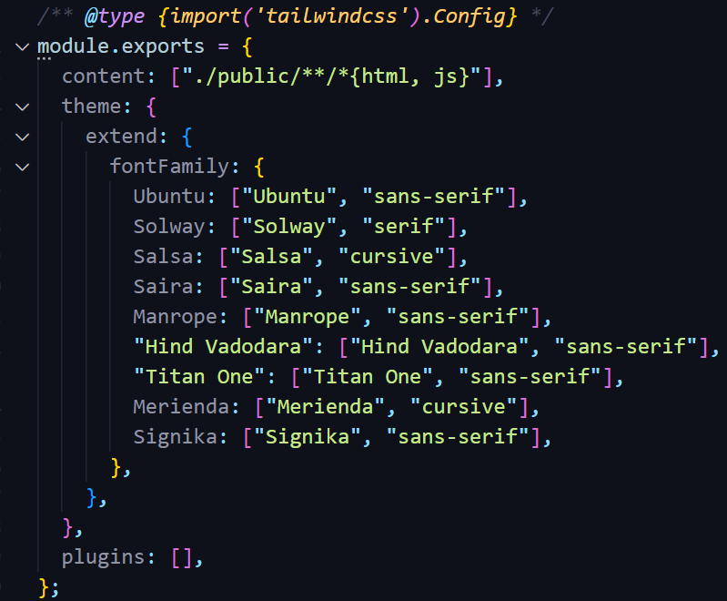
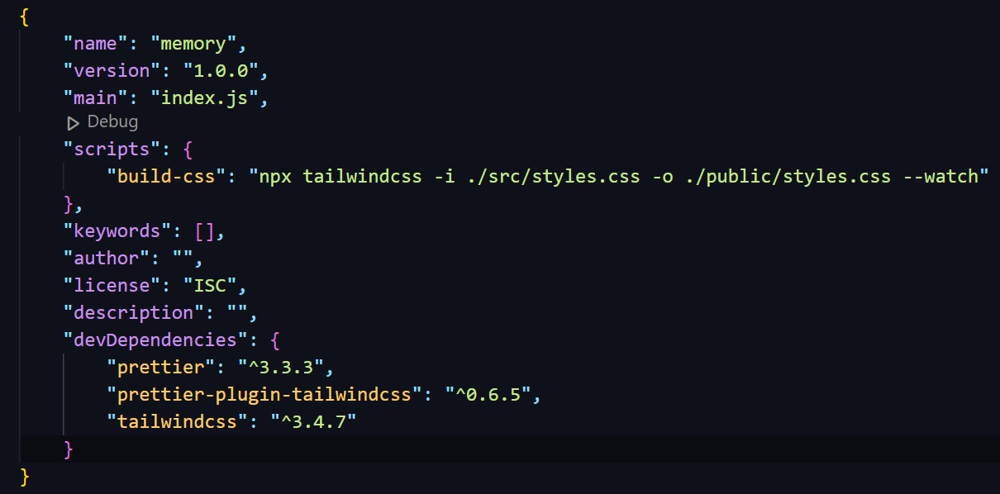
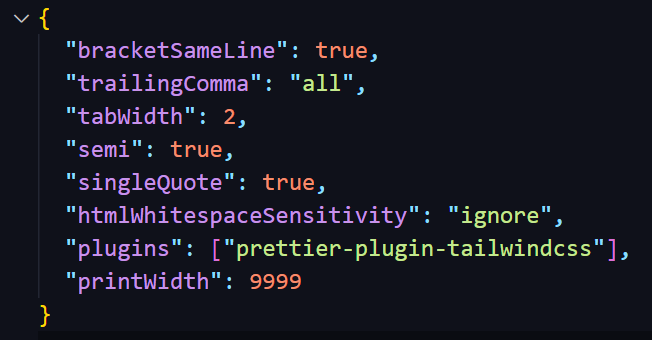

Git
What is Git?
Git is a popular version control system . It is used for: Tracking code changes; Tracking who made changes; Coding collaboration.
Git Initialization
- - Initialize Git on a folder, making it a Repository: open the folder you want to create a repository => right-click and choose Open Git Bash here . It then will create a hidden folder to keep track of changes in that folder.
- - Another way is that you can open the folder using VS code => open Terminal in VS code => type git init to create a git repository in that folder.
Git Terminology
- git init: initializes a brand new Git repository and begins tracking an existing directory. It adds a hidden subfolder within the existing directory that houses the internal data structure required for version control.
- git clone: creates a local copy of a project that already exists remotely. The clone includes all the project's files, history, and branches.
- git add: stages a change. Git tracks changes to a developer's codebase, but it's necessary to stage and take a snapshot of the changes to include them in the project's history. This command performs staging, the first part of that two-step process. Any changes that are staged will become a part of the next snapshot and a part of the project's history. Staging and committing separately gives developers complete control over the history of their project without changing how they code and work.
- git commit: saves the snapshot to the project history and completes the change-tracking process. In short, a commit functions like taking a photo. Anything that's been staged with git add will become a part of the snapshot with git commit .
- git status: shows the status of changes as untracked, modified, or staged.
- git branch: shows the branches being worked on locally.
- git merge: merges lines of development together. This command is typically used to combine changes made on two distinct branches. For example, a developer would merge when they want to combine changes from a feature branch into the main branch for deployment.
- git pull: updates the local line of development with updates from its remote counterpart. Developers use this command if a teammate has made commits to a branch on a remote, and they would like to reflect those changes in their local environment.
- git push: updates the remote repository with any commits made locally to a branch.
Git Commands
Delete file/folder from remote repository
-
git rm -r
'folder name/file name'
-
git commit -m
"Your comments"
-
git push origin main/master
Tailwind CSS
Tailwind CSS Initilization
-
- In VS Code, in the project folder (folder that contains all things for your project) open the Terminal by right-click on the folder =>
Open in Integrated Terminal
. Type
npm init -yto create package.json file for using NodeJS packages. -
- npm install -D tailwindcss=> to create node-modules folder -
- npx tailwindcss initto create tailwind.config.js file - - Change "content" in tailwind.config.js file to: 
- - Change "scripts" in package.json to: 
- npm run build-css
Need to execute the code:
npm run build-css
every time relaunch VS Code.
Tailwind CSS Configuration
npx tailwindcss init --full
→ to create Tailwind default configuration file
→ this will create file: tailwindcss.config.js . This is the same as the file when we use npx tailwindcss init to create tailwind file used for the project.
→ rename the default config file to make sure that it's not used for our project.
Prettier
Prettier Tailwind CSS Initilization
- Install "prettier-plugin-tailwindcss" as a dev-dependency:
npm install -D prettier prettier-plugin-tailwindcss
- Create ".prettierrc.json" file in the folder that contains the .html file (public folder in this example)
- Add the plugin to .prettierrc.json
Issues
- Old closing tag for empty element " />" still occurs.
- When using HTML Formatting Elements (<b>, <em>, <strong>,...) in a paragraph (inside <p> element), Prettier automatically formats it to enter a new line.